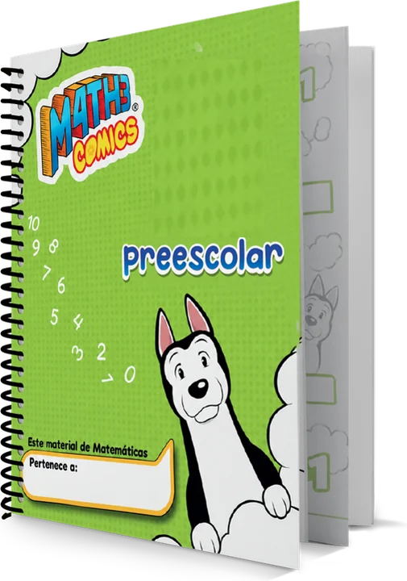

Preescolar

Cuaderno preescolar
Libro de actividades matemáticas tamaño carta de 100 páginas a todo color en papel bond, con pasta dura y engargolado con arillo metálico.
Qué trabaja
- Actividades matemáticas
- Trazo motriz
- Comprensión matemática
- Ejercicios múltiples